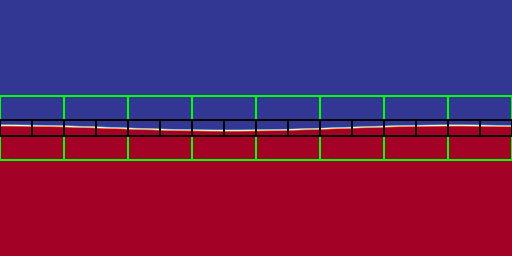
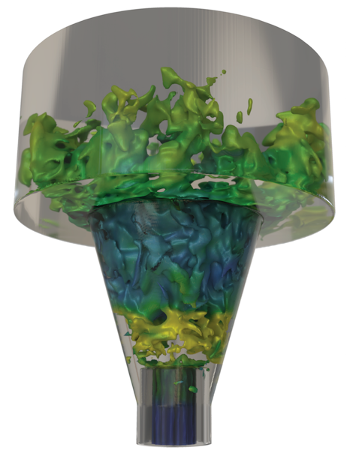

Language interfaces
C++, Fortran, and Python interfaces support a range of application workflows.

Overview
AMReX is a publicly available software framework for building massively parallel block-structured adaptive mesh refinement applications. It supplies reusable data structures, algorithms, solvers, and performance-portable execution patterns for scientific applications across CPUs, GPUs, and advanced HPC systems.
Framework capabilities
C++, Fortran, and Python interfaces support a range of application workflows.
Cell-centered, face-centered, edge-centered, and nodal data are supported on structured mesh hierarchies.
AMReX supports hyperbolic, parabolic, and elliptic solves on adaptive grid structures.
Applications can use optional subcycling in time for time-dependent PDE systems.
Particle data structures and iterators support data-parallel particle simulations on adaptive meshes.
Embedded boundary tools represent irregular geometry on uniform, block-structured meshes.
Scalable distributed FFT operations support spectral methods and Poisson solves.
Parallelization supports MPI, OpenMP, CUDA, HIP, SYCL, and hybrid execution models.
Parallel I/O supports both native AMReX format and HDF5, helping applications write and read data from large parallel runs.
AMReX plotfiles are supported by Amrvis, yt, VisIt, and ParaView.
AMReX includes profiling tools designed for the hierarchical structure of AMReX-based applications.
AMReX supports integration with HYPRE, PETSc, and SUNDIALS for linear solvers and time integrators.
Adaptive resolution
Block-structured AMR exploits varying resolution requirements in space and time by focusing computational resources in spatiotemporal regions of interest. The grid structure dynamically evolves over time without a parent-child relationship between coarser and finer grids.
This Kelvin-Helmholtz instability uses three total levels of refinement and was generated by the publicly available IAMR code for solving the variable-density incompressible Navier-Stokes equations.

Particle workflows
AMReX provides data structures and iterators for data-parallel particle simulations. This approach is suited to particles that interact with data defined on a block-structured mesh hierarchy.
Example applications include Particle-in-Cell simulations, Lagrangian tracers, and particles that exert drag forces onto a fluid in multiphase flow calculations. The example shown is granular material falling into a bucket, color coded by speed.

Complex geometry
For computations with complex geometries, AMReX provides data structures and algorithms for embedded boundary discretizations. The computational mesh remains uniform and block-structured while the irregular domain boundary conceptually cuts through the mesh.
This example shows a compressible high-speed swirling jet using the PeleC simulation code created by NREL and LBNL with support from the Exascale Computing Project.

Open development
AMReX was developed initially as an Exascale Computing Project (ECP) co-design center project of the U.S. Department of Energy and continues to grow as a community-driven framework hosted by the High Performance Software Foundation, a project of the Linux Foundation. Development happens in the GitHub repository under the development branch. Contributions are welcome at any level, including documentation, bug fixes, new test problems, and new solvers. To get help, open a GitHub issue or discussion with the AMReX community.
AMReX gratefully acknowledges the past and current support of the U.S. Department of Energy Office of Advanced Scientific Computing Research (ASCR).